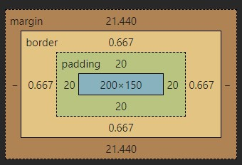
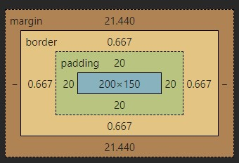
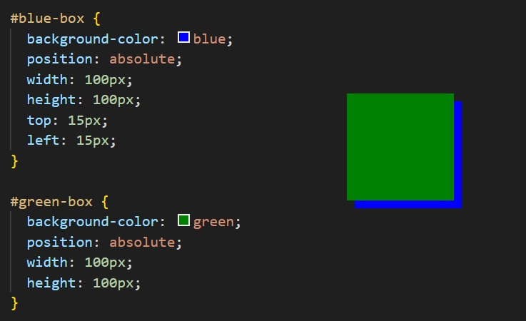

Fundamentals of CSS
Intro to CSS
HTML websites on their own are bland and boring. Using CSS (Cascading Style Sheets), is a language used by web developers to make websites visually appealing.
The ruleset which makes up CSS is explained and shown below.
The ruleset which makes up CSS is explained and shown below.
- Selector - The beginning of the ruleset which is used to target the element that will be styled
- Declaration Block - The code in between the curly braces that contains the declaration
- Declaration - The group name for the property and value pair that applies a style to the selected element
- Property - The first part of the declaration that signifies what visual characteristic of the element is to be modified
- Value - The second part of the declaration that signifies the value of the property
Inline Styles
CSS Rulesets can also be applied directly in a HTML document.
The line of code above will make that specific paragraph element have red text, which is 20 pixels in size. Using an external CSS sheet or
<p style="color: red, font-size: 20px"> Hello, world! </p>The line of code above will make that specific paragraph element have red text, which is 20 pixels in size. Using an external CSS sheet or
style element can only apply styles to multiple of the same tag.
Internal Stylesheet
As discussed above, HTML has the
<style> </style> element which allows for CSS to be created and applied directly in the HTML document. These tags are used within the <head> </head> tags, like so:
External Stylesheet
It's best to store CSS in an external stylesheet to avoid mixing HTML and CSS together.
To link an external stylesheet, it can be done with the following HTML: Like the anchor element,
.css is the file format for external stylesheets.To link an external stylesheet, it can be done with the following HTML: Like the anchor element,
link uses the href attribute which points to where the CSS file is. The rel attribute describes the relationship between the HTML and CSS file.
As a stylesheet is being used, the value rel="stylesheet" needs to be used.
Selectors - Type
Declarations are a fundamental part of CSS as they apply the style to a selected element. The selector is used to target specific HTML tags, then the declaration applies the style.
 The snippet above will apply the colour red to all
The snippet above will apply the colour red to all
The snippet above will apply the colour red to all p elements.
Selectors - Universal
The universal selector in CSS applied the declarator to all HTML elements. The universal selector is the asterisk *.
 The above rule will apply to all HTML elements, meaning that each element will have the Verdana font as well as a black border which is 2 pixels thick.
The above rule will apply to all HTML elements, meaning that each element will have the Verdana font as well as a black border which is 2 pixels thick.
The above rule will apply to all HTML elements, meaning that each element will have the Verdana font as well as a black border which is 2 pixels thick.
Selectors - Classes
In HTML, there is a
Multiple classes can be added to the
class attribute. Creating a class in CSS is done by putting a period before the selector.
Using .c-heading in any HTML class attribute will apply the chosen CSS class.Multiple classes can be added to the
class attribute to create unique styles.
Selectors - ID
At times, single elements may need to be selected. This can be done in HTML by using the
id="" attribute. In CSS, to select the ID, the hash (#) is used in the selector.
Best practise is to use IDs when only a specific ruleset needs to be applied to an element and not used on multiple elements. Whilst IDs can be used on multiple elements, it's best to use classes for this instead.
Selectors - Attribute
CSS has an attribute selector which allows specific HTML attributes to be selected. This can be done by wrapping the selector in square brackets [ ].
 The above example will only apply the style to any HTML tags that have the
The above example will only apply the style to any HTML tags that have the
Types and/or attribute values can also be specified too. The above example will target the
The above example will target the
The above example will only apply the style to any HTML tags that have the href attribute applied.Types and/or attribute values can also be specified too.
The above example will target the img tag and match the text within the src attribute. In this example, the images will be sized based on their rule.
Pseudo-Class
Elements on a webpage can change depending on user behaviour. For example, hovering over text may change it's appearance. A good example is when a user hovers over a link on a website and the background image may change to a darker or lighter colour.
Pseudo-classes are applied to rulesets by adding a colon (:) after the selector and adding the name, which are:
:hover-> Changes the behaviour when a user hovers their mouse over the element:visited-> Changes the behaviour when a user has visited a link:disabled-> Will disable the input or user interactbility on a certain field/button/text box:active-> Changes the behaviour of the chosen element when the user has activated it (I.E; by clicking and holding)
Specificity
Specificity is the order by which the browser decides which CSS styles will be displayed. The best practice in CSS is to style elements while using the lowest degree of specificity to that if an element needs a new style, it's easily overridden.
IDs are the most specific selector in CSS, followed by class, then type. Consider the following HTML and CSS below
The colour of the text in the example above will be set to blue. This is because the class selector is more specific then the type selector.
If an ID attribute had been set and set to orange, the text would change to orange as the ID if more specific than the class.
To make styles easy to edit, it's best to use the type selector (element name), if possible. If not, use a class selector. If that's not specific enough, use the ID.
To make styles easy to edit, it's best to use the type selector (element name), if possible. If not, use a class selector. If that's not specific enough, use the ID.
Chaining
When writing CSS rules, it's possible to require an HTML element to have two or more CSS selectors at the same time. This is achieved by combining multiple selectors which is called chaining.
For example, if there was a special class for
<h1> elements, the CSS would look like
This means that only <h1> elements with the class special would have the style applied. If a <p> element had the attribute class set to special, the style would not be applied.
Descendant Combinator
In addition to chaining selectors to select elements, CSS supports selecting elements that are nested within other HTML elements, known as descendants.
Considering the following:
 The nested
The nested
The nested <li> elements are descendants of the <ul> element and can be selected with the descendant combinator.
Multiple Selectors
To make CSS more concise, it's possible to add CSS styles to multiple CSS selectors at once. This avoid writing repetitive code.
The following code has repetitive style attributes
To avoid writing 
font-family: 'Courier New', Courier, monospace; twice, they can be separated by using a comma to apply the same style to both.
Visual Rules
Font Family
To change the typeface of text on a web page, the  The above CSS rule will change all
The above CSS rule will change all
A few things to note when choosing fonts;
font-family property is used.
The above CSS rule will change all h1 elements to the font specified.A few things to note when choosing fonts;
- The font specified must be installed on the users computer or must be downloaded with the site
- Web Safe Fonts are a group of fonts supported across most browsers and operating systems
- If web safe fonts are not being used, the chosen font may not appear the same between browsers and operating systems
- When the name of a typeface consists of more than one word, it's best practice to enclose them in quotes (as seen above).
Font Size
To change the font size,  This will set all
This will set all
font-size: property is used.
This will set all <p> elements font size to be 18 pixels big.
Text Align
By default, text will always appear on the left of the container it is in. The
text-align: property is used to change how text is aligned within it's container.
The property can be set to one of the following:
left-> Aligns text to the left of its parentcenter-> Centres the text of its parentright-> Aligns the text to the right of its parentjustify-> Spaces out text in order to align with the left and right sides of the parent
Foreground, Background colour and Opacity
The best way to remember what the foreground and background colour affects, if the foreground would affect the text in a container, whilst the background will colour the elements background which doesn't affect the text.
The ruleset above will make all the text grey and the background black.
Opacity is the measurement of how transparent something is. CSS has the
Colour is described in more detail here.
Opacity is the measurement of how transparent something is. CSS has the
opacity: property which controls this. This property can only contain values between 0 and 1. 1 means 100% opacity, 0 means 0% opacity, and 0.5 means 50% opacity. 1 is visible, 0 is invisible.
Colour is described in more detail here.
Background Image
CSS has the ability to change the background of an element. This is achieved by the 
background-image property.
The
!important property
CSS has an  As
As
!important property can be applied to specific declarations, instead of full rules. This will override any style no matter how specific. Once !important is used, it's very hard to override.
The syntax of !important looks like this:
As !important has been used on the <p> selector, all <p> elements will appear blue, even though .main p is more specific.
The Box Model
The Box Model
The box model comprises the set of properties that define parts of an element that take up space on a web page. The model includes the content area size (width & height) and the elements padding, border, and margin.
These properties includes
width & height-> The width and height of the content areapadding-> The amount of space between the content area and the borderborder-> The thickness of the border surrounding the content area and paddingmargin-> The amount of space between the border and the outside edge of the element
Width and Height
An elements content has two dimensions, width and height. By default, the dimensions of a HTML box are set to hold the raw contents of the box.
The ruleset above will set the width and height to all
<p> elements to 80 pixels in height and 240 pixels in width. If the width and height are set to pixels, it will appear the same on all devices.
An element that fills a laptop screen may overflow on a mobile device.
Borders
A border is a line that surrounds an element, like a frame around a painting. Borders can be set with a specific width, style, and colour.
By default, the border is set to In the example above, the border style is set to solid and the colour is set to black. The thickness is not set, so defaults to medium.
In the example above, the border style is set to solid and the colour is set to black. The thickness is not set, so defaults to medium.
width-> The thickness of the border. Can be set in pixels or in one of the following keywords:thin, medium, thickstyle-> The design of the border. Browsers can render any of the 10 different styles. Some includenone, dotted, solidcolor-> The colour of the border. Web browsers can render colours using a few different formats, including 140 built in colours.
By default, the border is set to
medium none color, where colour if the current colour of the element. If width, style, or colour are not set, the browser assigns default values.
In the example above, the border style is set to solid and the colour is set to black. The thickness is not set, so defaults to medium.
Border Radius
When creating a border, by default the border will be square. CSS allows the borders corners to be modified using the
With CSS, a circle can be created by setting an element to the same width and height, then setting the radius equal to half of the width of the box, which would be 50%.
border-radius property.
The ruleset above will set all four corners of the border to a radius of 5 pixels (if the same curvature that a circle with a radius of 5 pixels would have).With CSS, a circle can be created by setting an element to the same width and height, then setting the radius equal to half of the width of the box, which would be 50%.
Padding
The space between the contents of a box and the borders of a box is known as padding. Padding is like the space between a picture and the frame surrounding it. This space can be modified by using the  The ruleset above will put 10 pixels of padding between the content of the paragraph and the border on all 4 sides. This property is often used to expand the background colour and make the content look less cramped.
Each side of the padding can be specified using the following properties:
The ruleset above will put 10 pixels of padding between the content of the paragraph and the border on all 4 sides. This property is often used to expand the background colour and make the content look less cramped.
Each side of the padding can be specified using the following properties:
padding property.
The ruleset above will put 10 pixels of padding between the content of the paragraph and the border on all 4 sides. This property is often used to expand the background colour and make the content look less cramped.
Each side of the padding can be specified using the following properties:
padding-toppadding-rightpadding-bottompadding-left
Padding Shorthand
Defining the left, right, bottom, and top of padding can be in the padding property. A declaration that uses multiple properties as values is known as shorthand property.
These can be specified in various ways:
With 4 values:
In the above, the four values correspond to the amount of padding on each side in a clockwise direction. In order, it specifies them like so:
padding-top = 6pxpadding-right = 11pxpadding-bottom = 4pxpadding-left = 9px
padding-top = 5pxpadding-leftandpadding-right = 10pxpadding-bottom = 20px
padding-topandpadding-bottom = 5pxpadding-leftandpadding-right = 50px
Margin
The margin refers to the space directly outside of the box. The
margin property is used to specify the size of this space.
The ruleset above will place 20 pixels of space on the outside of the paragraphs box on all four sides. This means that another HTML element cannot come within 20 pixels of the paragraphs border.
The same with padding, the margin property has different names too. They can be applied like the padding with shorthand properties following the same order.
margin-topmargin-rightmargin-bottommargin-left
The
auto value
The  The ruleset above will centre the divs in their containing elements. The 0 sets the top and bottom margins to 0 pixels. The
The ruleset above will centre the divs in their containing elements. The 0 sets the top and bottom margins to 0 pixels. The
To centre an element, the width must be set for that element. Otherwise, the width of the div will automatically be set to the full width of its containing element, like the
The ruleset above sets the width to 400 pixels which is less than the width of most displays. This will centre the div within its containing element that is greater than 400 pixels wide.
margin property allows content to be centred. However, there are a few syntax requirements.
The ruleset above will centre the divs in their containing elements. The 0 sets the top and bottom margins to 0 pixels. The auto value instructs the browser to adjust the left and right margins until the element is centred within its containing element.To centre an element, the width must be set for that element. Otherwise, the width of the div will automatically be set to the full width of its containing element, like the
body for example.
It's not possible to centre an element that takes up the full width of the page since the width of the page can change due to display and/or browser window size.The ruleset above sets the width to 400 pixels which is less than the width of most displays. This will centre the div within its containing element that is greater than 400 pixels wide.
Margin Collapse
With margins, there is a term called margin collapse. Horizontal margins (left and right), like padding, are always displayed and added together. For example, if two divs are next to each other, they will be as far apart as the sum of their adjacent margins.
 The rulesets above will place each div next to each other with a 40 pixel gap between them.
The rulesets above will place each div next to each other with a 40 pixel gap between them.
Unlike horizontal margins, vertical margins do not add. Instead, the larger of the two vertical margins sets the difference between adjacent elements. The vertical margin between
The rulesets above will place each div next to each other with a 40 pixel gap between them.Unlike horizontal margins, vertical margins do not add. Instead, the larger of the two vertical margins sets the difference between adjacent elements. The vertical margin between
#div-one and #div-two elements is 40 pixels. Although the sum is 60 pixels, the margin collapses so the spacing is only dependant on #div-two top margin.
Minimum and Maximum Height and Width
Because web pages can be viewed through different screen sizes, the content on the web page can suffer from those changes in size. To avoid this problem, CSS offers two properties that can limit how narrow or how wide an elements box can be. The same applies to the height too.
min-width-> Sets the minimum width of an elements boxmax-width-> Sets the maximum width of an elements boxmin-height-> Sets the minimum height of an elements boxmax-height-> Sets the maximum height of an elements box
Overflow
All of the components of the box model comprise an elements size. For example, an image that has the following dimensions is 364 pixels wide and 244 pixels tall.
The
- 300 pixels wide
- 200 pixels tall
- 10 pixels padding on the left and right
- 10 pixels padding on the top and bottom
- 2 pixels border on the left and right
- 2 pixels border on the top and bottom
- 20 pixels margin on the left and right
- 10 pixels margin on the top and bottom
The
overflow property controls what happens to content that overflows outside of its box. These are the commonly used values.
hidden-> Any content that overflows will be hidden from viewscroll-> A scrollbar will be added to the elements box so that the rest of the content can be viewed by scrollingvisible-> The overflowed content will be displayed outside of the containing element. This is the default value.
Resetting Defaults
All major web browsers have a default stylesheet they use in absence of an external stylesheet. These default stylesheets are known as user agent stylesheets. In this case, the term user agent is a technical term for browsers.
User agent stylesheets often have default CSS rules that set default values for padding and margin. This affects how the browser displays HTML element, which can make it difficult for a developer to design or style a web page. Many developers choose to set these default values so that they can work with a clean slate. The ruleset above resets the margin and padding of all HTML elements. It is often the first CSS rule in an external stylesheet. As both of the properties are set to 0, no unit of measurement is required.
User agent stylesheets often have default CSS rules that set default values for padding and margin. This affects how the browser displays HTML element, which can make it difficult for a developer to design or style a web page. Many developers choose to set these default values so that they can work with a clean slate. The ruleset above resets the margin and padding of all HTML elements. It is often the first CSS rule in an external stylesheet. As both of the properties are set to 0, no unit of measurement is required.
Visibility
Elements on a HTML page can be hidden from view with the
visibility property. The visibility property can be set to one of the following values:
hidden-> Hides the elementvisible-> Displays an elementcollapse-> Collapses an element
Changing The Box Model
Why change the box model?
The box model consists of, box dimensions, borders, padding, and margin. The box model has limitations regarding the box dimensions. The limitation is best shown with the example below.
 Under the current box model, the border thickness and padding will affect the dimensions of the box. 10 pixels of padding increases the height of the box to 220 pixels and the width to 320 pixels.
Next the 1 pixel border increases the height to 222 pixels and width to 322 pixels. Under this box model, the border thickness and padding are added to the overall dimensions of the box. This makes it difficult to accurately size a box.
Overtime, this can make all of the web pages content difficult to position and manage.
Under the current box model, the border thickness and padding will affect the dimensions of the box. 10 pixels of padding increases the height of the box to 220 pixels and the width to 320 pixels.
Next the 1 pixel border increases the height to 222 pixels and width to 322 pixels. Under this box model, the border thickness and padding are added to the overall dimensions of the box. This makes it difficult to accurately size a box.
Overtime, this can make all of the web pages content difficult to position and manage.
Under the current box model, the border thickness and padding will affect the dimensions of the box. 10 pixels of padding increases the height of the box to 220 pixels and the width to 320 pixels.
Next the 1 pixel border increases the height to 222 pixels and width to 322 pixels. Under this box model, the border thickness and padding are added to the overall dimensions of the box. This makes it difficult to accurately size a box.
Overtime, this can make all of the web pages content difficult to position and manage.
Box Model:
content-box
Many properties in CSS have a default value and don't have to be explictly set. For example, the default
font-weight is normal, but this property-value pair is not typically specified in a stylesheet.
The same can be said about the box model that browsers assume. In CSS, the box-sizing property controls the type of box model the browser should use when interpreting a web page.
The default value for box-sizing is content-box. This is the same box model that is affected by border thickness and padding.
Box Model:
border-box
Fortunately, the entire box model can be reset by specifiying
The example above resets the box models to
In this box model, the height and width of the box will remain fixed. The border thickness and padding will be included inside of the box, which means the overal dimensions of the box do not change. The heading on the left, has the default
Here is how the differences are calculated:
#headingOne
#headingTwo
Note: when viewing this in the browsers development tools, the elements inspector shows the border as 0.667 instead of 1.  This is because higher resolution monitors (such as 4k), will scale down to make sure the elements display correctly. This is calculated like so
box-sizing: border-boxThe example above resets the box models to
border-box for all HTML elements. The new model avoids the dimensional issues that exist in the former model previously discussed.In this box model, the height and width of the box will remain fixed. The border thickness and padding will be included inside of the box, which means the overal dimensions of the box do not change. The heading on the left, has the default
content-box property set for box-sizing as one isn't explictly defined. The heading on the right has box-sizing: border-box; set.
Both the width and height are the same for both headings. Setting box-sizing to border-box, the border and padding values are subtracted from the size of the content box, keeping the size of the box the same.
Whereas content-box adds the border and padding onto the size of the content box.Here is how the differences are calculated:
#headingOne
height: 200 + (2 * 10) + (2 * 1) = 222width: 300 + (2 * 10) + (2 * 1) = 322#headingTwo
height: 200 - (2 * 10) - (2 * 1) = 178width: 300 - (2 * 10) - (2 * 1) = 278Note: when viewing this in the browsers development tools, the elements inspector shows the border as 0.667 instead of 1.  This is because higher resolution monitors (such as 4k), will scale down to make sure the elements display correctly. This is calculated like so
1 / 1.5 = 0.667. Some browsers will often try antiliasing lines to improve rendering quality.
Display and Positioning
Flow of HTML
A browser will render elements of a HTML document that has no CSS from left to right, top to bottom, in the same way they exist in the document. CSS inclues properties that change
how a browser positions elements. These properties specify where an element is located on a page, if the element can share lines with other elements, and other related attributes.
Below are 5 properties which adjust the position of HTML elements:
Below are 5 properties which adjust the position of HTML elements:
positiondisplayz-indexfloatclear
Position
Looking at the block-level elements in the image below:
 Block-level elements like the boxes above create a block the full width of their parent elements, and they prevent other elements from appearing in the same horizontal space.
The block-level elements in the image above take up their own line of space and therefore don't overlap each other.
Block-level elements like the boxes above create a block the full width of their parent elements, and they prevent other elements from appearing in the same horizontal space.
The block-level elements in the image above take up their own line of space and therefore don't overlap each other.
The default position of an element can be changed by setting its
Block-level elements like the boxes above create a block the full width of their parent elements, and they prevent other elements from appearing in the same horizontal space.
The block-level elements in the image above take up their own line of space and therefore don't overlap each other.The default position of an element can be changed by setting its
position in CSS. The position property can have any one of the five values:
static(default)relativeabsolutefixedsticky
position property does not need to be set.
Position: Relative
The
The rulesets above show how setting the position to relative and using top and left can be used to move the element on the web page. Offsetting the relative element will not affect the positioning of other elements.
relative value allows the element to be relative to its default static position.
Although the rule above instructs the browser to expect a relative position of the green-box element, it does not specify where the element should be positioned.
This is done by accompanying the position declaration with one or more of the following offset properties that will move the element away from its default static position:
top-> moves the element down from the topbottom-> moves the element up from the bottomleft-> moves the element away from the left sideright-> moves the element away from the right side
static.The rulesets above show how setting the position to relative and using top and left can be used to move the element on the web page. Offsetting the relative element will not affect the positioning of other elements.
Position: Absolute
When an elements position is set to
absolute, all other elements will ignore the element and act like it is not present on the page. The element will be positioned relative to its closest positioned parent element, while the offset properties can be used to determine the final position from there.
As the blue box element has been set to absolute, it overlaps the green box. If the blue boxes position was set to relative, the blue box would be placed directly below the green box.
Position: Fixed
Using the
fixed value, means that the element will be in a fixed position, meaning it won't move if the user scrolls up or down on the page.
Position: Sticky
Since static and relative positioned elements stay in the normal flow of the document, when a user scrolls the page, these elements will scroll too.
Since
The
fixed and absolute positioned elements are removed from the documents flow, when a user scrolls, these elements will stay at their specified offset position.The
sticky value is another position value that keeps an element in the document flow as the user scrolls, but sticks to a specificed position as the page is scrolled further. This is done by using
the sticky value along with the other offset properties.
This means that the blue box will remain in view when the user scrolls down the page and will remain 100 pixels from the top of the browser viewport.
z-index
When boxes on a web page have a combination of different positions, the boxes (and their content) can overlap with each other, making the content difficult to read or consume.
The example below, the
The
The example below, the
green-box overlaps the blue-box.

The
z-index property controls how far back or forward an element should appear on the page when elements overlap. This can be thought as the depth of elements, with deeper element appearing behind shallower elements.
Depending on their values, the integer supplied instructs the browser on the order in which elements should be layered on the page.
In the example above, the blue-box has the z-index property set to 1. A thing to note, the z-index property does not work on static elements.
By default, elements have their z-index set to 0.
Display: Inline
Every HTML element has a default
The example above, all of the elements will be displayed 'inline' meaning they will appear on the same line.
The CSS
display value that dictates if it can share horizontal space with other elements. Some elements fill the entire browser from left to right regardless of the size of their content.
Other elements only take up as much horizontal space as their content requires and can be directly next to other elements. This section will cover three values for the display property:
inlineinline-blockblock
display for some elements, such as <em>, <strong>, and <a> are called inline. Inline elements have a box that wraps tightly around their content, only taking up the amount of space necessary ti display their content and not requiring a new line after each element.
The height and width of these elements cannot be specified in CSS. For example, the text of an anchor tag will, by default, be displayed on the same line as the surrounding text and it will only be as wide as necessary to contain its content. inline elements cannot be altered in size with the width and height properties.
The example above, all of the elements will be displayed 'inline' meaning they will appear on the same line.
The CSS
display property provides the ability to make any element an inline element. This includes elements that are not inline by default such as paragraphs, divs, and headings.
The CSS rule above will change the display of all h1 elements to be inline. The browser will render h1 elements on the same line as other inline elements immediately before or after them.
Display: Block
Some elements are not displayed in the same line as the content around them. These are called block-level elements. These elements fill the entire width of the page by default, but their width property can be set.
Unless otherwise specified, they are the heigh necessary to accommodate their content.
Elements that are block-level by default are all heading elements (
Elements that are block-level by default are all heading elements (
<h1> to <h6>), <p>, <div>, and <footer>. For a complete list, click here.
To make an element block (if not by default), using the display: block; property and value will make them elements block.
Display: Inline-Block
Inline-block display combines both from inline and block elements. Inline-block elements can appear next to each other and can specify their own dimensions using the  The CSS ruleset above puts all the divs onto the same line.
The CSS ruleset above puts all the divs onto the same line.
width and height properties.
The CSS ruleset above puts all the divs onto the same line.
Float
The
float property is commonly used for wrapping text around an image. Note: moving elements left or right for layout purposes is better suited for tools like CSS Grid and flex box, which is discussed later on.
The float property is often set using one of the values:
left-> moves, or floats, elements as far left as possibleright-> moves elements as far right as possible
float is used on the #orange-section which puts it on the right. This works for static and relative positioned elements.
Floated elements must have a width specified. Otherwise, the element will assume the full width of its containing element and changing the float property won't show any results.
Clear
The
The
float property can be used to float multiple elements at once. However, when multiple floated elements have different heights, it can affect their layout on a page. Specifically, elements can "bump" into each other and not allow other elements to properly move to the left or right.
The
clear property specifies how elements should behave when they bump into each other on the page. It can take one of the following values:
left-> the left side of the element will not touch any other element within the same containing elementright-> the right side of the element will not touch any other element within the same containing elementboth-> neither side of the element will touch any other element within the same containing elementnone-> the element can touch either side
<div> elements on the page are floated to the left. The element with class special did not move all the way left because a taller div blocked its positioning.
By setting its clear property to left, the special div will be moved all the way to the left side of the page.
Improved Styling with CSS
Introduction to colour
CSS supports a wide variety of colours. Such as named colours like blue, green, red, limegreen, etc.
The metric system allows developers to take advantage of the whole colour spectrum that browsers support.
Colours in CSS can be described in three ways:
Colours in CSS can be described in three ways:
- Named Colours -> English words that described the colour (blue, green, cyan, lime, etc) also called keyword colours
- RGB -> Numeric values that describe the mixture of red, green, and blue
- HSL -> Numeric values that describe a mixture of hue, saturation, and lightness
Introduction to colour
CSS supports a wide variety of colours. Such as named colours like blue, green, red, limegreen, etc.
The metric system allows developers to take advantage of the whole colour spectrum that browsers support.
Colours in CSS can be described in three ways:
Colours in CSS can be described in three ways:
- Named Colours -> English words that described the colour (blue, green, cyan, lime, etc) also called keyword colours
- RGB -> Numeric values that describe the mixture of red, green, and blue
- HSL -> Numeric values that describe a mixture of hue, saturation, and lightness
Foreground VS Background
CSS has two ways of displaying colour within an element. These are
color and background-color.
color will colour the contents of an element, such as text. background-color will colour the background of an element, leaving the foreground untouched.
The ruleset above will set the contents to red and the background to dark red.
Hexadecimal
Colours in CSS can be represented by hexadecimal notation. Hexadecimal numbers start with a
To use hexadecimal in CSS, the name of the colour can be replacd by the hex code The ruleset above applies red and dark red (as the above) but represented in hexadecimal notation.
# followed by either 3 or 6 characters. These values (in order) represent red, green, and blue.
Hexadecimal is a base-16 number system which counts from 0 to F. A - F represent the numbers 10 to 15. The number starts at 0 (being 0) and 15 being F.
darkseagreen: #8FBC8Fsienna: #A0522Dsaddlebrown: #8B4513brown: #A52A2Ablack: #000000 or #000white: #FFFFFF or #FFFaqua: #00FFFF or #0FF
To use hexadecimal in CSS, the name of the colour can be replacd by the hex code The ruleset above applies red and dark red (as the above) but represented in hexadecimal notation.
RGB Colours
Another way to represent colours is using
rgb(). This uses decimal numbers rather than hexadecimal and looks like this
Each of the three values represents a colour component which can have any number ranging from 0 - 255. The first number represents how much red is visible, the second represents how much green is visible, and the third how much blue is visible.
In general, hex and RGB colour representations are equivalent. When designing a website theme, stick to a single colour format, instead of switching between them.
Hexadecimal and RGB
Hexadecimal and the RGB colour system can represent many more colours than the small set of CSS named colours. In both hex and RGB, each component has at least 3 values for each colour.
Each can be one of 256 values. Specifically,
256 * 256 * 256 = 16,777,216. This is the amount of colours that can be represented using hex or RGB, instead of the 140 named CSS colours.
Hue, Saturation, and Lightness
Another way of representing colours in CSS is using the
Lightness refers to how light or dark the colour is. Setting the lightless to 50% is normal brightness. Increasing the lightness to 100% makes the colour closer to white, and decreasing towards 0% makes the colour darker, closer to black.
hsl() scheme. The syntax is similar to RGB, but has some slight differences.
The first value represents the hue. It referrers to an angle on a colour wheel.
- Red is 0 (or 360)
- Green is 120
- Blue 240
Lightness refers to how light or dark the colour is. Setting the lightless to 50% is normal brightness. Increasing the lightness to 100% makes the colour closer to white, and decreasing towards 0% makes the colour darker, closer to black.
Opacity and Colour
When 2 colours are overlapped, nothing from the bottom element shows through the top element. Using
Hexadecmial also has an alpha value too. By adding an extra 2 characters to the 6-digit representation, will affect the alpha.
CSS has a
hsla() allows for a fourth value which controls the alpha values of the colour.
Meaning the colours can be made more transparent. The alpha is a decimal value from 0 to 1. If the alpha is set to 0, the colour will be completely transparent. An alpha of 1, the colour will be opaque. Setting the value to 0.5 would mean half transparency.
When a colourd alpha is below 1, any colour behind it will blend in. The blending happens for each pixel, no blurring occurs. rgba() is equivalent to hsla().
Hexadecmial also has an alpha value too. By adding an extra 2 characters to the 6-digit representation, will affect the alpha.
CSS has a
transparent value which is equivalent to rgba(0, 0, 0, 0)
Typography
font-family
When specifying a typeface with multiple words, like Times New Roman, it is recommended to use ' ' to group words together.
There is a slection of fonts that will appear the same across all browsers and operating systems. These fonts are referred to as web safe fonts. The full list can be viewed here.
Web safe fonts are a good fallback fonts that can be used if the preferred font isn't available. In the example above, Courier is used as a fallback font if Courier New isn't available. this is known as the font stack.
A font stack usually contains a list of similiar looking fonts. The browser will try to use Courier New first. If its not available, it will use Courier, if that isn't available, it will use a monospaced font.
Serif fonts have extra details on the ends of each letter. Sans-Serif letters do not. Serif and Sans-Serif are also keyword values that can be added as a final fallback font if nothing else in the font stack is available.
font-weight
The font-weight property controls how bold or thin text appears. It can be specified with keywords or numerical values.
The
font-weight property can take any of these keyword values:
bold-> makes the font boldnormal-> normal font weight. Default valuelighter-> one font weight lighter than the elements parent valuebolder-> one font weight bolder than the elements parent value
normal.
Font weight 700 is equal to bold.
Note: not all fonts can be assigned a numeric font weight, and not all numeric font weights are available to all fonts. It is good practice to look up the font being used to see which
font-weight values are available.
font-style
Text can be italicized with font-style: italic;
text-transform
Text can also be styled to appear in either all upper or lower case with the text-transform property.
The example above will make all <h1> text to appear in uppercase, regardless of the case typed in HTML.
It may seem pointless in having this property, but if a website posts breaking news from recent events, a ruleset to make all headings uppercase may be preffered as it'll allow the writer to type in all lower case and let the browser handle the capitalization.
Text Layout
The
The
The
letter-spacing property is used to set the horizontal spacing between individual characters in an element. This property value takes the lengh in units such as px or em.
The spacing between words can be set using the word-spacing property.
The
line-height property can be used to set how tall each line containing the text to be. Line height values can be unitless number such as 1.2, or a length value such as px, em, or percentage.
The unitless value is preferred since it is responsive based on the current font size. If the line-height is specified by a unitless number, changing the font size will automatically re-adjust the line height.
The
text-align property aligns text to its parent element.
The above ruleset will align all h1 elements to the centre of their parented element, instead of the default left.
Web Fonts
Free font services like Google Fonts and Adobe Fonts host fonts that can be linked to form HTML document with the
link element. fonts.com allows users to purchase fonts which can be downloaded
and hosted with the website itself. A @font-face ruleset can be created in the CSS file which links to the relative path of the font file.
Web Fonts using
<link>
To use fonts on Google Fonts, browse the site for the desired font. Once a font has been found, click the box that contains the font.
On the top-right, click Get Font then Get Embed Code (or download it).
Click Copy Code and paste it between the
Click Copy Code and paste it between the
head tags of the HTML document. Copy the CSS code and paste that in the relevant CSS file.
Web Fonts using
@font-face
Fonts can be added using a
Example ruleset using
@font-face ruleset in CSS, instead of using link. Font files come in different formats:
- OTF -> OpenType Format
- TTF -> TrueType Format
- WOFF -> Web Open Font Format
- WOFF2 -> Web Open Font Format 2
@font-face ruleset to ensure compatibility on all browsers.
Example ruleset using
@font-face
Web fonts are explained in further detail here.